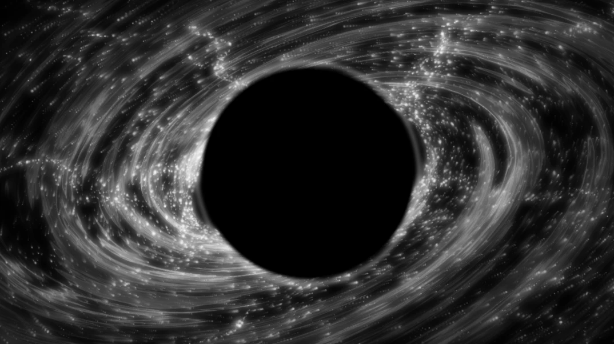
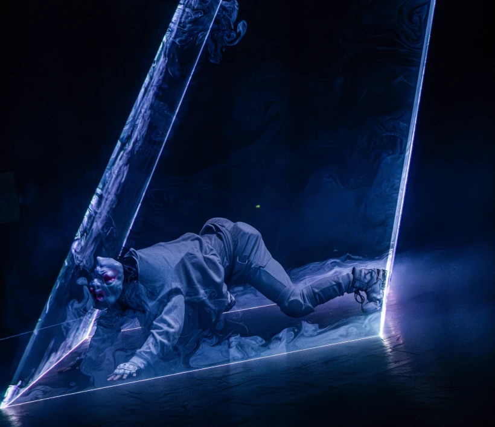
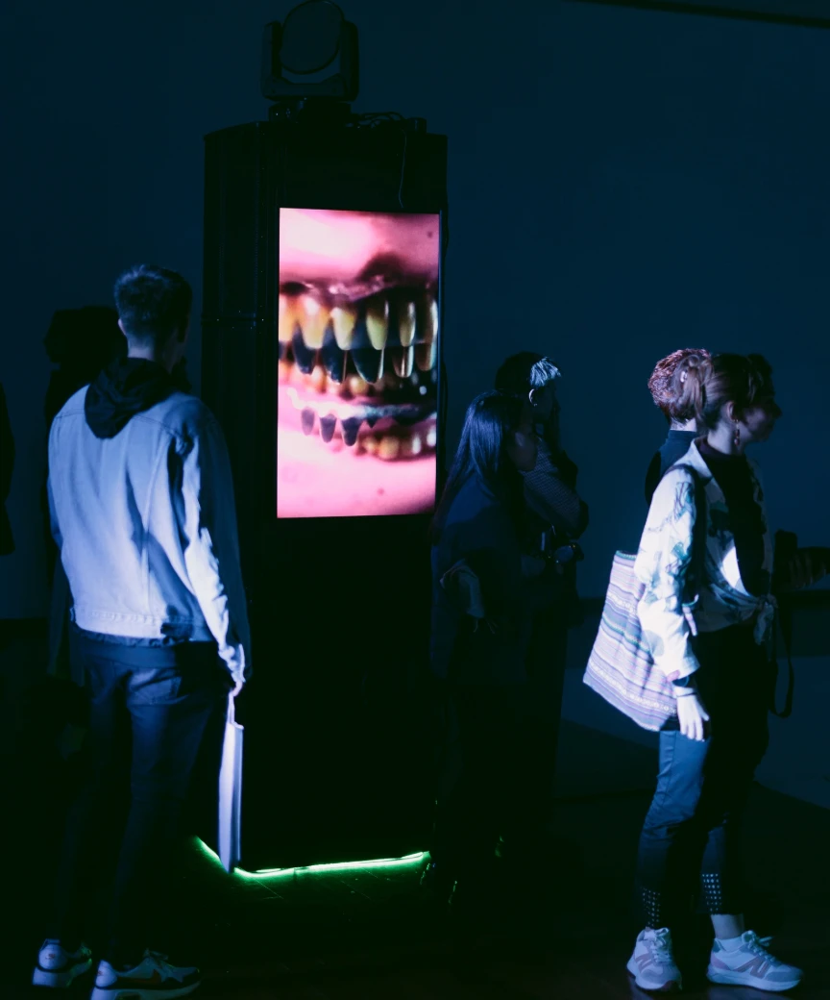
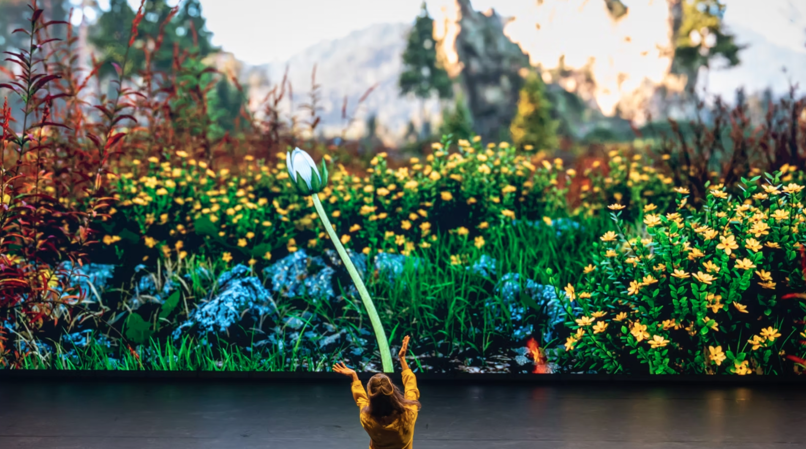
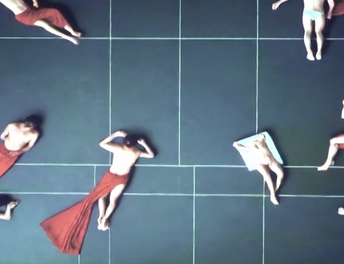
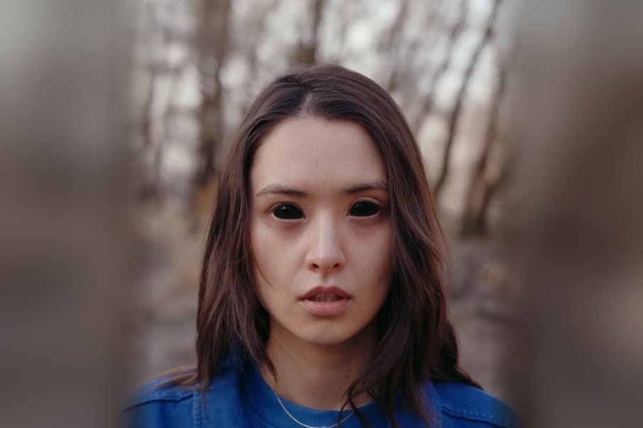
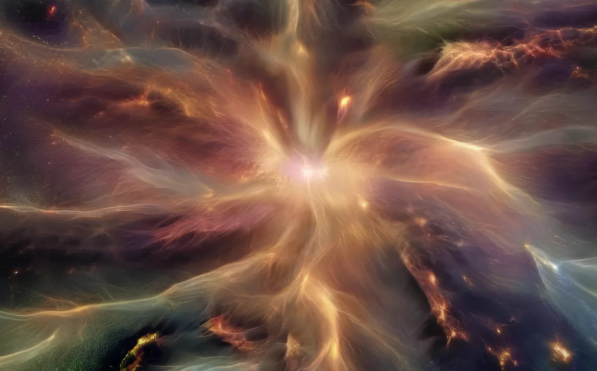
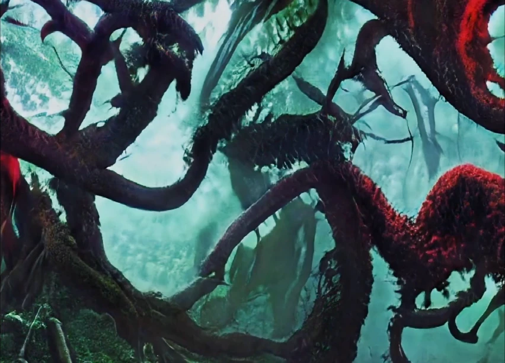
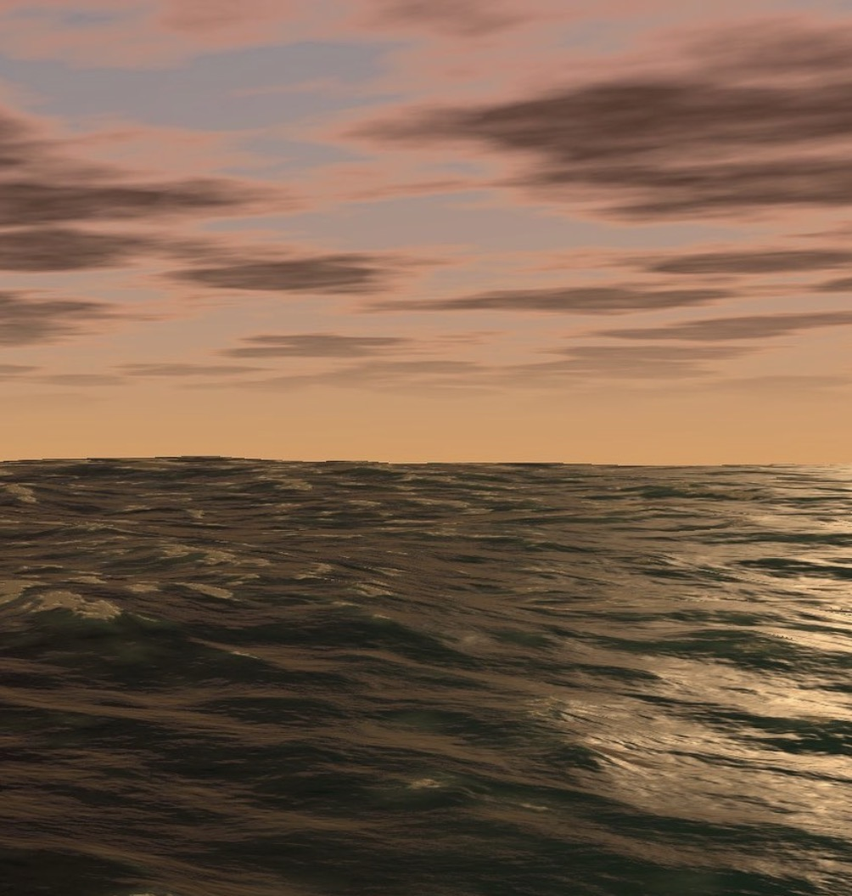

Installations, performances and films made with real-time machine-learning systems: multi-agent orchestrators for light and sound, traversable generated environments, AI entities built from different explorations of real time cybernetics.

Fundação Arpad Szenes – Vieira da Silva, Lisbon
Live A/V
Algorithmic fiction for the stage
Writing & direction: Jonathan Uliel Saldanha, Gonçalo Guiomar · Sound: Jonathan Uliel Saldanha, Gonçalo Penas · Light: Gonçalo Guiomar, Bárbara Paixão
Theater

Galeria Municipal do Porto. Essays in the book
Concept: Jonathan Uliel Saldanha, Gonçalo Guiomar · Orchestrator & light: Gonçalo Guiomar, Bárbara Paixão · Sound & sculpture: Jonathan Uliel Saldanha
Installation
Concept & direction: Chris Salter · AI video system: Gonçalo Guiomar
Performance
Teatro Municipal Vila do Conde, Curtas Film Festival
HHY & The Macumbas with Lunar Ring
Live A/V
Short film
Director: Octavian Moț · Writers: Daniela Nedovescu, Octavian Moț · Co-writers: Zachary Mainen, Răzvan Șandru, Gonçalo Guiomar
Film
Mucho Flow Festival. 8-channel projection
With Jonathan Uliel Saldanha, Lunar Ring
Live A/V
Metamersion: Latent Spaces, Champalimaud Foundation
With Jonathan Uliel Saldanha, Lunar Ring
Installation
Metamersion, Champalimaud Foundation
With André Gonçalves, Zachary Mainen
InstallationExhibitions & performances
- 2026Spirit ViolencePerformance
Fundação Arpad Szenes – Vieira da Silva, Lisbon. With Jonathan Uliel Saldanha
- 2026Atavic Forest 2Screening
ATA Festival, Zurich
- 2025Surface DisorderExhibition
Galeria Municipal do Porto, with J. U. Saldanha
- 2025ZangeziPerformance
Immersive Arts Space, ZHdK, Zurich. Concept & direction: Chris Salter
- 2025JezabelInstallation
Lisbon Fashion Week
- 2024Concert
- 2023Atavic Forest, liveConcert
Mucho Flow Festival. 8-channel projection, live-generated visuals. With Lunar Ring
- 2022Metamersion: Latent SpacesExhibition
Champalimaud Foundation, Lisbon. Co-organizer and artist
- 2021MetamersionExhibition
Champalimaud Foundation, Lisbon
Texts
Essays →- 2025The BiteEssay
With J. U. Saldanha. In Surface Disorder, Les presses du réel
- 2025Gnosis FractureEssay
With J. U. Saldanha. In Surface Disorder, Les presses du réel